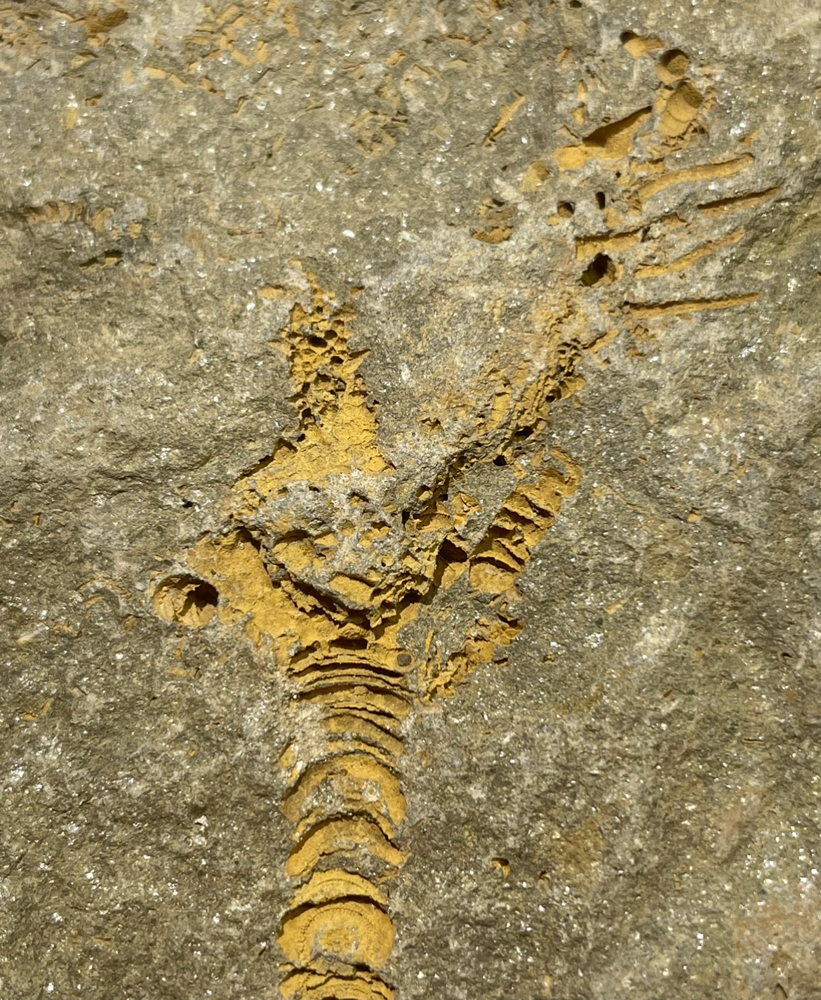

indet. camerate
• Devonian
• Belen Formation
• Patacamaya (Department of La Paz), Bolivian Altiplano, Bolivia
Size: 2 cm calyx incl. anal tube
Some fossils are preserved as hollow casts, sometimes stained orange-red from iron. Such is the case for many crinoids found in the Devonian-aged Belen Formation of Bolivia, which seem poorly studied. This presumably undescribed crinoid shows a camerate-like calyx with a beautiful spinose anal tube, an unusually thick stem relative to the calyx, and what may be a pinnulated arm preserved.
|

|